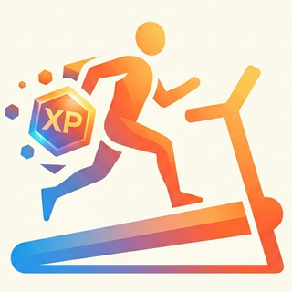
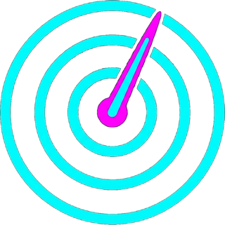
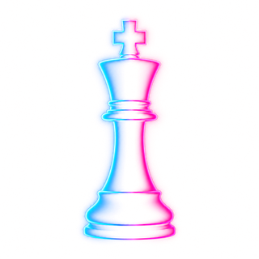
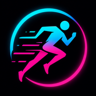
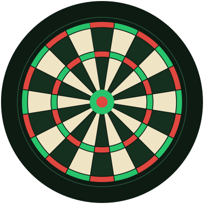
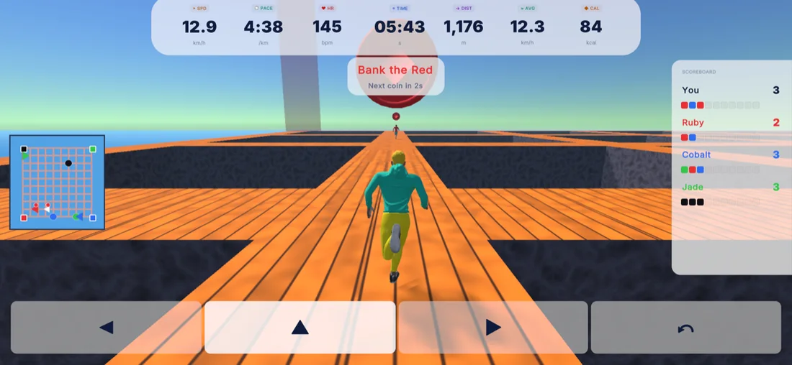
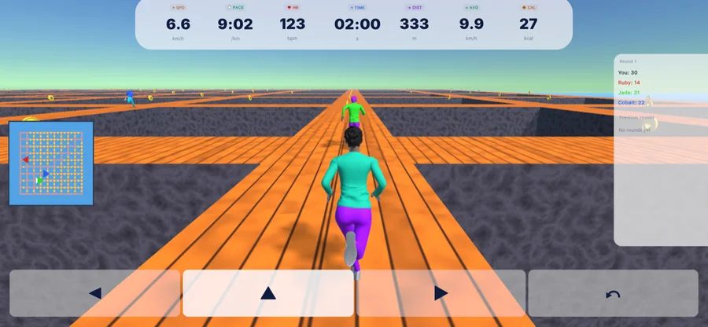
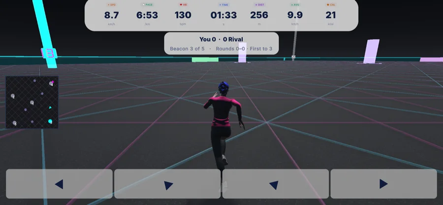
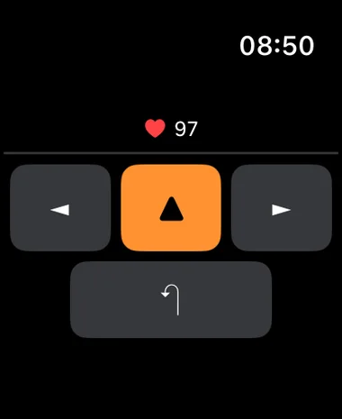

Paul Robinson — Maker of apps, games, shits & giggles
I build things that keep score
Six products. One habit: turning running, riding, walking, playing and throwing into something you can measure, replay and beat.
Selected Work

TreadGame
For winter
Mini-games for your treadmill. Cast to a TV, pick from a roster of mini-games, and the action moves with your stride — the faster you run, the faster your runner goes. Optional watch controls; the clock takes care of itself.

CycleHUD
For summer
Eyes on the road. Radar on your wrist. Built because my bike radar's own app was terrible — a radar-first HUD for the phone you already have, not another cycle computer. Every car behind you on screen, haptics on your wrist, and the ghost of your best ride to race.

It's Just a Game
For all-year-round fun
The party game for everyone — invented by my five-year-old. Quick-fire mini games for family and friends, ages 8 to 80 — spin the wheel to pick who chooses each round, play, rematch. Simple, silly, brilliant fun on the phones you already have.
For family walks
Made to make a family walk more fun for the kids. Drop points on a map, add a prize, send the hunt over iMessage or WhatsApp — then they track each X down with a compass and a phone that buzzes when they're close. It's amazing how many of the points are in beer gardens.

Gaitway
For mapping outdoors
Walk or run — it works out which. A watch-first tracker that reads your gait from step cadence, pauses when you stop, and learns your local map as you go. Fifty metres before any junction you’ve run before, your wrist prices each way on: the stretch ahead, your own fastest pace over it, and the quickest way home. Plan a route from your own network on the phone and the watch calls the turns.

Darts Scorer
For when exercise is done
Point a camera at the board and it keeps score. Automatic dart detection, spoken announcements, full 501 down to 101 double-out plus free throw — everything on-device in the browser. No server, no uploads, no install.
Spotlight — TreadGame
The big one. Many evenings and weekends poured into making the treadmill the most fun place in the house.
Born of one frustration: everything I could run with was really made for bikes, and none of it was fun. So — arcade games plus running. What's the worst that can happen? A full Unity game that runs on your phone or tablet and casts to the TV. Pick from 32 mini-games — chase aliens, bank colours, collect coins, light trails — and your real pace drives your runner: speed up on the belt and your runner speeds up on screen. Live speed, pace, heart rate and calories sit across the top while you play, and a watch on your wrist doubles as the controller.




Buttons on your wrist — Apple Watch and Wear OS both work as controllers, so you can steer without breaking stride.
The Deal
Everything here is free. No caveats, no adverts, no snooping — no data stored, nothing tracked, nothing sold. Just things to help you get fitter, healthier and have more fun. Let's all do good things.
About
I'm Paul — a software developer turned AI-turbocharged maker, and I can't leave a hobby alone. If I run, ride, play or throw it, sooner or later I build an app for it.
Every project here started the same way: doing something I enjoy and thinking "this would be better with a scoreboard." TreadGame was built because everything I could run with was really made for bikes and was no fun — so why not combine arcade and running? What's the worst that can happen! It was also the perfect excuse: building business apps by day made me want to experiment with Unity and game engines — a familiar language, a vastly different genre. CycleHUD exists because my bike radar came with a terrible app and I'd rather use the phone in my pocket than buy a cycle computer. Darts Scorer exists because I'm a mathematician turned software developer — and as everyone knows, mathematicians can't actually add up, so a camera does the pub maths for me, out loud. It's Just a Game was invented by my five-year-old — because the best games are the ones everyone in the room can play. And X-Marks exists to make a family walk something the kids actually ask for — though it's amazing how many of the points turn out to be in beer gardens. Gaitway is the newest, and it started with a question rather than a gadget: I run a lot of fields and little paths, and the routes all overlap without ever quite repeating. What if every run I'd ever done were joined up into one network — would it hand me routes I'd never thought to run, or new ways to push myself? So I built it to find out. Oh, and I do serious stuff too. Really serious stuff. But I get paid for that.
- Name
- Paul Robinson
- Trained as
- Mathematician — can't add up
- Builds
- iPhone & Watch apps, games, browser CV
- By day
- Really serious stuff (that bit's paid)
- Projects
- Six and counting
- Price
- Free. All of it. Always.
- Fuelled by
- Running, riding, darts, fun & beer
- Status
- Always building something